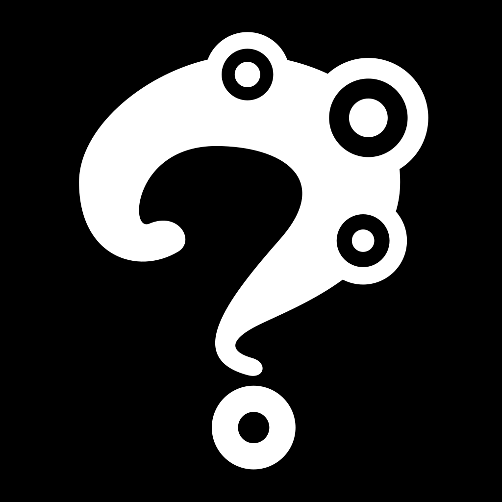
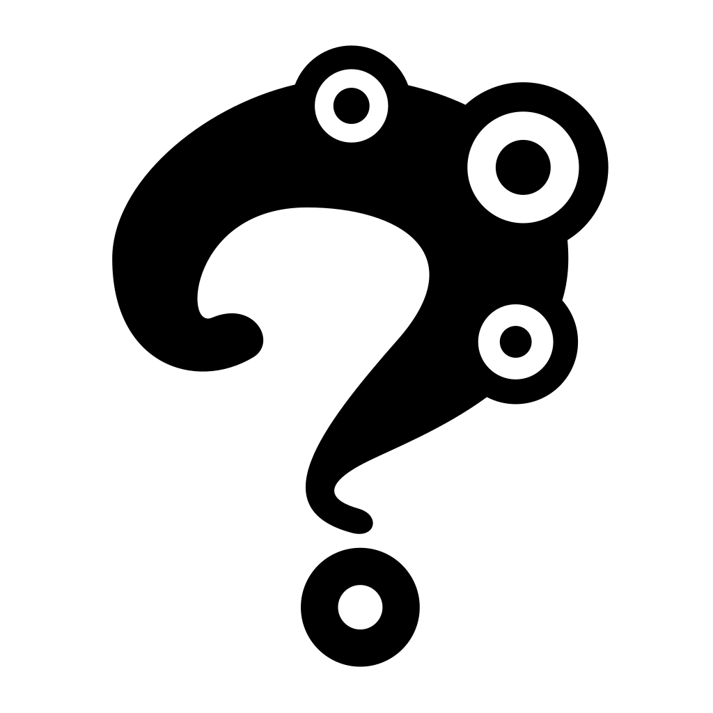
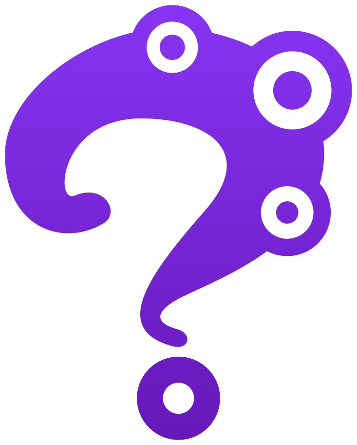

Icon, purple
Main app icon. Use it on light backgrounds and as an avatar.
Octonia logos, colors and fonts for press, partners and friends. Need another format? Write to hello@octonia.app.
Main app icon. Use it on light backgrounds and as an avatar.

One-color version for black-and-white print.

One-color version on a white tile.

The question mark alone, for light backgrounds.
One-color mark for black-and-white print.
For dark or photo backgrounds.
Download the original icon (SVG) with its gradient and shadow. The black and white versions are flat.
Tap a hex code to copy it.
Big science, made playful.
Headings. Free under the SIL Open Font License. Google Fonts
A read-aloud science workbook.
Text and buttons. Free under the SIL Open Font License. Google Fonts